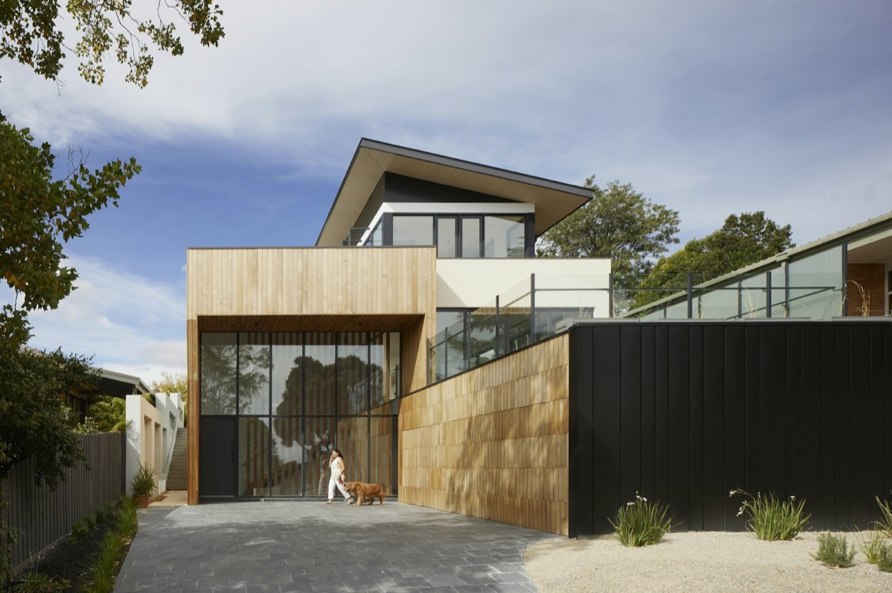

Shift your focus
01
Residential
Residential(01)
How we work on residential projects(02)
What you receive(03)
Why clients choose Space-in(04)
Highlighted projects(05)
Residential work
All projects →Next focus
Interiors→
Space-in® 2026 · Architecture + Interiors · Indore, Madhya PradeshLet's talk